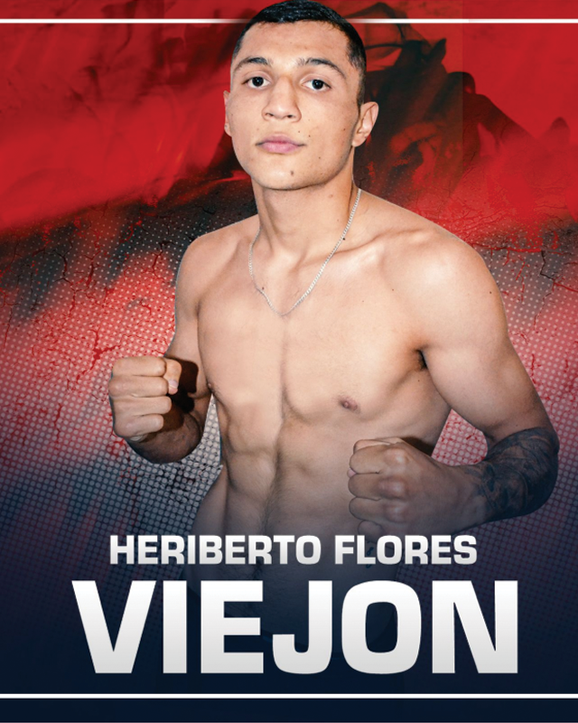

← Nuestros peleadores
Heriberto Flores · El Viejón

Tlaquepaque, Jalisco · 17-1-0, 13 Ko’s
Se acercó al boxeo tras muchas peleas fuera del ring para defenderse; le ayudó con un problema de sobrepeso y a para ganar autocontrol; compitió en la Copa Metropolitana, donde se dio cuenta de sus alcances, lanzándose a la aventura por el boxeo profesional sabiendo que estaba listo para hacerse respetar; coleccionó triunfos por la vía del cloroformo puro hasta su debut internacional en Costa Rica, donde también ganó por nocaut arrancándole la etiqueta de invicto al local Jorge Sánchez, volvió a Mexico para derrotar al estadounidense Ve Shawn Owens, el olímpico Juan Pablo ‘Pivi’ Romero, el contendiente mundialista Dante ‘Crazy’ Jardón y el argentino Nicolás David Verón, triunfos que ha conseguido bajo la asesoría de Marco Antonio Barrera.